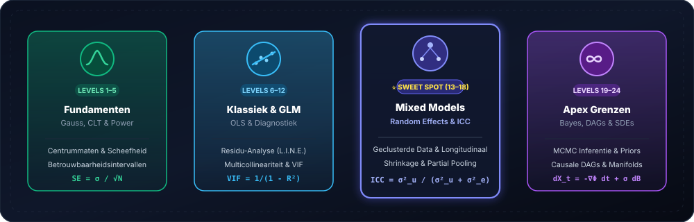
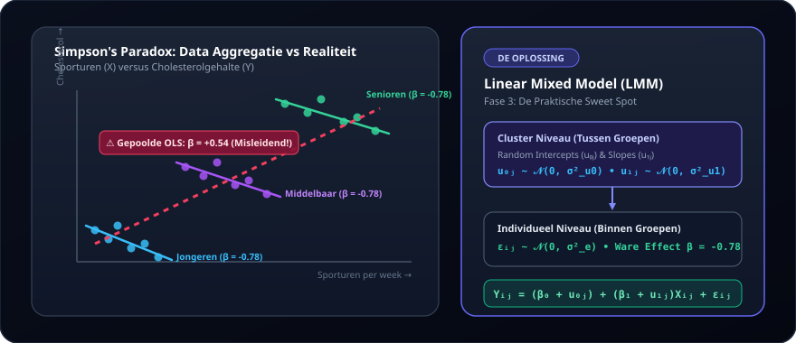
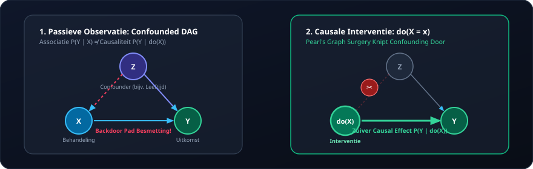

✨ 100% Statistical Intuition • Zero Code Friction • From Basics to Apex
Master Real Statistics.
From Descriptives to Hilbert Spaces.
No syntax headaches in R or Python. Understand what models truly do, why assumptions fail, how Linear Mixed Models tame hierarchical data, and how infinite-dimensional SDEs operate. Completely adaptive, visual, and interactive.
24 Levels
From Zero to Apex
80+ Problems
Cases, Dilemmas & Pitfalls
24 Simulators
Real-Time Visual Feedback
0 Lines of Code
100% Statistical Reasoning
Visual Continuum
The Statistical Continuum: 4 Progressive Phases

💎 The 100% Free Guarantee
Quality of a $2,500+ Graduate Program. 100% Free & Open Access.
What universities and commercial bootcamps charge thousands for behind paywalls, we deliver open-access to everyone worldwide. No paywalls, no credit cards, no hidden traps.
🔓
All 24 Levels 100% Unlocked
No "freemium" bait-and-switch where advanced modules require payment. Jump straight to Mixed Models (L13) or Apex (L24).
✓ 100% Instant Access
💳
Zero Credit Card, No "Trial"
You will never be asked for billing details. No trial periods that quietly transition into recurring monthly subscriptions.
✓ No Billing Trap
⚡
Instant Start Without Sign-Up
No mandatory forms, no passwords, no spam in your inbox. You start literally within 2 seconds inside your browser.
✓ 0 Seconds Sign-Up Friction
📜
Free Verified Certificate
Complete Level 24 and download your official digital certificate as a PDF free of charge. Zero fees to claim your credential.
✓ Official Credential Included
The Honest Value Comparison:
University Course or Commercial Bootcamp
$2,000 – $5,000
Often dominated by debugging package syntax in R/Python and rigid theory without real-time visual labs.
Statistical Journey Platform
$0 (Free Forever & Open Access)
24 real-time simulators, 80+ empirical cases, adaptive level diagnostic, and verified certificate included.
Why Traditional Statistics Education Fails (And How We Fix It)
Stop wasting 80% of your energy debugging package syntax and missing commas. Focus on what truly matters: scientific judgment.
✕
The Old, Frustrating Way
- • Endless syntax debugging in R or Python instead of understanding underlying model mechanics.
- • Blindly memorizing Greek formulas and reporting p < 0.05 without inspecting residual assumptions (L.I.N.E.).
- • Ignoring clustering and dependencies, yielding dramatically deflated standard errors and false discoveries.
Result: Impostor syndrome, p-hacking, and broken research models.
✓
The Statistical Journey Method
- • 100% conceptual mastery through interactive parameter sliders, instant visual feedback, and real-world cases.
- • Spot dangerous traps instantly: p-hacking, Simpson's paradox, multicollinearity, and heteroscedasticity.
- • Master the Practical Sweet Spot (Mixed Models L13–18) up to the mathematical Zenith (Apex L24).
Result: Confident scientific reasoning and unshakeable statistical intuition.

Built for Serious Researchers, Data Scientists & Analysts
Whether you publish in top journals or make high-stakes business bets: pure statistical intuition is your highest-leverage asset.
🎓
PhD Candidates & Academic Researchers
Confidently model repeated measures, hierarchical clustering (ICC), and survival curves for peer-reviewed papers.
Focus: Mixed Models & Power
💻
Data Scientists & Machine Learning Engineers
Look deeper than 'model.fit()'. Master causal diagrams (DAGs), Bayesian priors, and curved manifold structures.
Focus: Causality & Manifolds
📊
Analysts & Strategic Decision Makers
Spot misleading dashboards, unmask hidden confounders, and avoid costly strategic blunders caused by flawed assumptions.
Focus: Diagnostics & Pitfalls
The Four Phases of Your Statistical Journey
A crystal-clear roadmap: identify your current standing and advance to statistical mastery.
Levels 1 to 5
🌱
Phase 1: Foundations & Probability
Z-scores, t-tests, ANOVA, p-values, and confidence intervals. Build an unbreakable bedrock.
• L1: Outlier Trap & Median
• L2: Normal Curve & 68-95-99.7
• L3: Central Limit Theorem (CLT)
• L5: p-values vs Clinical Relevance
Levels 6 to 12
📈
Phase 2: Classical Regression & Diagnostics
OLS, residual diagnostics, multicollinearity, heteroscedasticity, GLM logistic regression, and Poisson models.
• L6: OLS & The Story of the Line
• L8: Diagnostics (L.I.N.E.)
• L9: Simpson's Paradox & Confounders
• L11: Logistic Regression & Odds Ratios
Levels 13 to 18
Sweet Spot ⭐
Phase 3: Mixed Models (The Practical Sweet Spot)
Random intercepts, random slopes, ICC, repeated measures, GEE, and GLMMs. The powerhouse for 90% of real-world research.
• L13: Clustered Data & OLS Failure
• L14: Mixed Models: Random Intercepts
• L15: Random Slopes & Trajectories
• L16: GLMM for Binary/Count Data
• L18: Survival Analysis (Cox Proportional Hazards)
Levels 19 to 24
🌌
Phase 4: Advanced Frontiers & Apex
Bayesian thinking, MCMC sampling, survival analysis, causal DAGs, manifold geometry, and infinite-dimensional SDEs.
• L19: Bayesian Foundations (Prior & Posterior)
• L20: Bayesian MCMC & Stan/PyMC
• L21: Gaussian Processes
• L22: Causal Inference in Hilbert Spaces
• L23: SDEs & Stochastic Diffusion
• L24: The Ultimate Apex Model (Ω)
Practical Sweet Spot
Levels 13–18
The Practical Sweet Spot: Linear Mixed Models (Levels 13–18)
Over 90% of empirical data in medicine, biology, psychology, and commerce is clustered or longitudinal. Standard OLS severely underestimates standard errors, generating spurious precision. Levels 13 to 18 teach you exactly when and how to deploy Random Intercepts and Random Slopes.

Why This Approach Works
Traditional education forces you to wrestle with library syntax. We sharpen your mathematical and scientific reasoning.
🧠
Adaptive Intake Scanner
Zero time wasted. Our 10-step diagnostic scan measures your mathematical horizon and places you right at your optimal start level.
📊
24 Interactive Simulators
Adjust parameters, inject noise, rotate 3D manifolds, and observe how p-values and posterior distributions shift in real time.
🎯
Practice Arena & Pitfall Drills
80+ realistic dilemmas covering p-hacking, Simpson's paradox, collider bias, non-normal residuals, and overdispersion.
🏆
Theoretical Apex & Verified Certificate
Master Level 24 and earn an official printable certificate in Infinite-Dimensional Non-parametric Bayesian SDEs on Manifolds.
Causal Foundation Preview (Level 22)
P(Y | do(X)) ≠ P(Y | X)

Theoretical Apex
Level 24 • Verified Mastery
The Theoretical Apex: Level 24 & Verified Completion
For those who want to venture to the absolute mathematical frontier: Infinite-Dimensional Non-parametric Bayesian SDEs on Manifolds with Rough Paths & Causal Hilbert Spaces. Complete all 24 levels and claim your official certificate.
dX_t = -∇_ℳ Φ(X_t) dt + σ(X_t) dB_t^rough in ℋ
Frequently Asked Questions (FAQ)
Q: Do I need any programming experience in R or Python?
No, absolutely not. This course focuses 100% on statistical intuition, assumptions, model selection, and residual diagnostics. All mathematics and simulations execute live inside your browser.
Q: How does the adaptive intake scan work?
In 10 diagnostic scenario questions, the algorithm evaluates your grasp from foundational hypothesis testing to advanced mixed models and Bayesian principles, recommending your ideal starting level.
Q: Can I jump directly to any level?
Yes! All 24 levels are fully unlocked. You can jump directly to Linear Mixed Models (Level 13) or explore the Apex (Level 24).
Q: Is there an official proof of completion?
Yes, once you finish Level 24, you can generate and print or save an official verified completion certificate as PDF.
Ready to Transform How You Think About Data?
No registration required. No credit card. 100% free and open access. Start with Level 1 or take the 2-minute diagnostic intake.